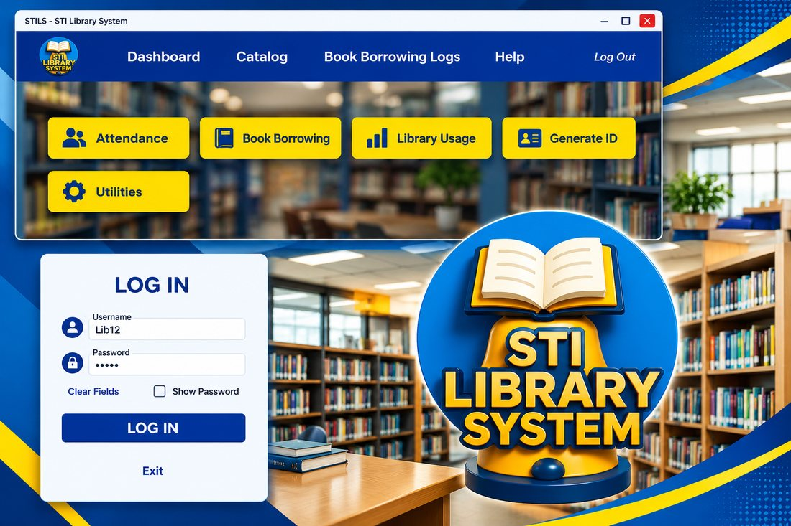

Capstone project
STI Library Management System
A Windows desktop app in C# with a SQL Server database. Librarians scan a barcode instead of typing, and the system handles attendance, borrowing and returns, the book catalog, usage reports, and ID generation.
What I took from it. Scanning only feels fast when the data behind it is clean, so I spent as much time on the database and on testing borrow and return flows as on the screens. Writing it all down taught me that a system isn’t finished when it works once, but when someone else can use and maintain it.
View a C# sample (simplified, not the full source)
// Look up a scanned barcode and record the borrow
private void OnBarcodeScanned(string barcode)
{
var book = catalog.FindByBarcode(barcode);
if (book == null || book.Available < 1)
{
MessageBox.Show("This book is not available.");
return;
}
borrowLog.Add(currentBorrower.Id, book.Id, DateTime.Now);
book.Available--;
}